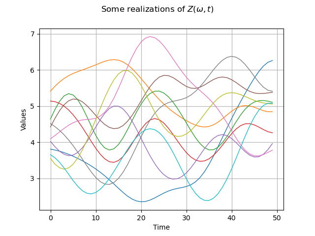

Note
Go to the end to download the full example code
Create a process from random vectors and processes¶
The objective is to create a process defined from a random vector and a process.
We consider the following limit state function, defined as the difference between a degrading resistance  and a time-varying load
and a time-varying load  :
:
![\begin{align*}
g(t)= r(t) - S(t) = R - bt - S(t)
\end{align*}]()
We propose the following probabilistic model:
 is the initial resistance, and
is the initial resistance, and  ;
; is the deterioration rate of the resistance; it is deterministic;
is the deterioration rate of the resistance; it is deterministic;- is the time-varying stress, which is modeled by a stationary Gaussian process of mean value
 ,
standard deviation
,
standard deviation  and a squared exponential covariance model;
and a squared exponential covariance model;  is the time, varying in
is the time, varying in ![[0,T]]() .
.
First, import the python modules:
import openturns as ot
from openturns.viewer import View
import math as m
1. Create the gaussian process  ¶
¶
Create the mesh which is a regular grid on , with  , by step =1:
, by step =1:
b = 0.01
t0 = 0.0
step = 1
tfin = 50
n = round((tfin - t0) / step)
myMesh = ot.RegularGrid(t0, step, n)
Create the squared exeponential covariance model:
![C(s,t) = \sigma^2e^{-\frac{1}{2} \left( \dfrac{s-t}{l} \right)^2}]()
where the scale parameter is  and the amplitude
and the amplitude  .
.
ll = 10 / m.sqrt(2)
myCovKernel = ot.SquaredExponential([ll])
print("cov model = ", myCovKernel)
cov model = SquaredExponential(scale=[7.07107], amplitude=[1])
Create the gaussian process :
S_proc = ot.GaussianProcess(myCovKernel, myMesh)
2. Create the process  ¶
¶
First, create the random variable , with  and
and  :
:
muR = 5
sigR = 0.3
R = ot.Normal(muR, sigR)
The create the Dirac random variable  :
:
B = ot.Dirac(b)
Then create the process using the ![FunctionalBasisProcess]() class
and the functional basis
class
and the functional basis  and
and  :
:
![R(\omega)-bt = R(\omega)\phi_1(t) + B(\omega) \phi_2(t)]()
with  independent.
independent.
const_func = ot.SymbolicFunction(["t"], ["1"])
linear_func = ot.SymbolicFunction(["t"], ["-t"])
myBasis = ot.Basis([const_func, linear_func])
coef = ot.ComposedDistribution([R, B])
R_proc = ot.FunctionalBasisProcess(coef, myBasis, myMesh)
3. Create the process ![Z: (\omega, t) \rightarrow R(\omega)-bt + S(\omega, t)]() ¶
¶
First, aggregate both processes into one process of dimension 2: 
myRS_proc = ot.AggregatedProcess([R_proc, S_proc])
Then create the spatial field function that acts only on the values of the process, keeping the mesh unchanged, using the ValueFunction class.
We define the function  on
on  by:
by:

in order to define the spatial field function  that acts on fields, defined by:
that acts on fields, defined by:
![\forall t\in [0,T], g_{dyn}(X(\omega, t), Y(\omega, t)) = X(\omega, t) - Y(\omega, t)]()
g = ot.SymbolicFunction(["x1", "x2"], ["x1-x2"])
gDyn = ot.ValueFunction(g, myMesh)
Now you have to create the final process  thanks to :
thanks to :
Z_proc = ot.CompositeProcess(gDyn, myRS_proc)
4. Draw some realizations of the process¶
N = 10
sampleZ_proc = Z_proc.getSample(N)
graph = sampleZ_proc.drawMarginal(0)
graph.setTitle(r"Some realizations of $Z(\omega, t)$")
view = View(graph)

5. Evaluate the probability that  ¶
¶
We define the domaine ![\mathcal{D} = [2,4]]() and the event :
and the event :
domain = ot.Interval([2], [4])
print("D = ", domain)
event = ot.ProcessEvent(Z_proc, domain)
D = [2, 4]
We use the Monte Carlo sampling to evaluate the probability:
MC_algo = ot.ProbabilitySimulationAlgorithm(event)
MC_algo.setMaximumOuterSampling(1000000)
MC_algo.setBlockSize(100)
MC_algo.setMaximumCoefficientOfVariation(0.01)
MC_algo.run()
result = MC_algo.getResult()
proba = result.getProbabilityEstimate()
print("Probability = ", proba)
variance = result.getVarianceEstimate()
print("Variance Estimate = ", variance)
IC90_low = proba - result.getConfidenceLength(0.90) / 2
IC90_upp = proba + result.getConfidenceLength(0.90) / 2
print("IC (90%) = [", IC90_low, ", ", IC90_upp, "]")
view.ShowAll()
Probability = 0.7514705882352942
Variance Estimate = 5.5479048319547984e-05
IC (90%) = [ 0.7392190178861351 , 0.7637221585844534 ]